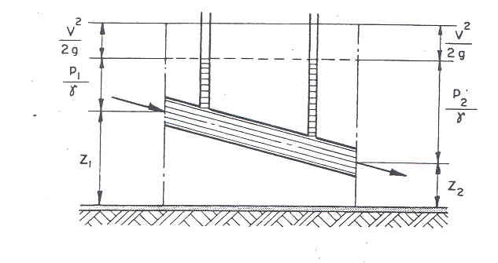

Teorema de BERNOULLI para um fluído perfeito
O teorema de BERNOULLI traduz o princípio de conservação de energia, considerando que “no escoamento permanente de um fluído perfeito a energia total permanece constante, ou seja, a soma das energias: Cinética ($V_2/2g$); Piezométrica ($P/\gamma$) e Geométrica (Z) são constantes numa linha de corrente”.
A figura abaixo apresenta as diferentes cargas de energia que ocorrem com um fluído perfeito em uma linha de corrente.

Demonstração do teorema de Bernoulli para fluídos perfeitos.
No caso do fluído perfeito, ou ideal, não existe viscosidade, não havendo dissipação de energia durante o seu movimento. Na hipótese de não dissipação de energia, a soma das três componentes da energia total é constante: $$\frac{V_{1}^{2}}{2g} + \frac{P_{1}}{\gamma} + Z_1 = \frac{V_{2}^{2}}{2g} + \frac{P_2}{\gamma} + Z_2 \Rightarrow \text{constante}$$ Importante notar que cada um desses termos é expresso em unidade linear (metros), constituindo-se o que se denomina carga ou altura ou energia por unidade de peso.A equação de Bernoulli é uma das equações mais importantes e úteis da Hidráulica tendo as seguintes restrições para sua aplicação: